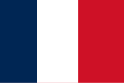
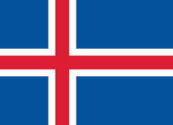
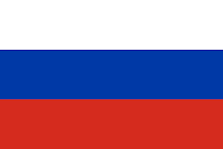
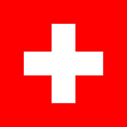
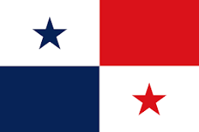
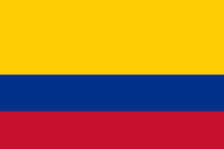
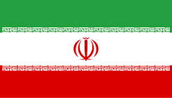
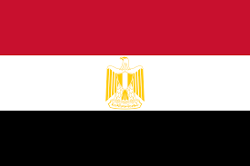
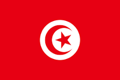

¿De qué se trató el Mundial de 2018?
La Copa Mundial de la FIFA 2018 fue la vigesimoprimera edición del torneo y se disputó en Rusia entre el 14 de junio y el 15 de julio de 2018. Esta cita representó la primera oportunidad en que el mayor evento futbolístico del planeta se desplegó en territorio de Europa Oriental. Bajo el lema de la hospitalidad y la innovación, el torneo se caracterizó por una infraestructura de transporte eficiente y una atmósfera festiva de integración multicultural.
A nivel institucional y tecnológico, Rusia 2018 marcó el hito más revolucionario del siglo XXI en el fútbol reglamentario: la implementación oficial y definitiva del Árbitro Asistente de Video (VAR). Esta herramienta cambió para siempre la dinámica del arbitraje al corregir errores flagrantes en goles, penaltis, tarjetas rojas directas e identidades erróneas. El formato se mantuvo firme con 32 selecciones distribuidas en 8 grupos de 4 equipos, con el sistema tradicional de prórrogas de 30 minutos antes de los penaltis.
En el plano futbolístico, el torneo consagró la excelencia de una brillante generación europea. La selección de Francia, dirigida por Didier Deschamps, impuso un estilo de juego pragmático, caracterizado por una solidez defensiva granítica y transiciones ofensivas a velocidades supersónicas. En la gran final, celebrada en el Estadio Luzhnikí de Moscú ante 78.011 espectadores, Francia se coronó campeona tras derrotar de forma contundente a la sorprendente Croacia por 4-2 en los 90 minutos reglamentarios.
Francia consiguió así el segundo campeonato mundial de su historia, exactamente 20 años después de su primera corona en 1998, consolidando a Didier Deschamps como la tercera persona en ganar el certamen como jugador y entrenador.
Informacion que tenes que saber
Info general
- País Anfitrión: Rusia
- Fecha de Inicio:
14 de Junio de 2018
(14/06/2018) - Fecha de Finalizacion:
15 de Julio de 2018
(15/07/2018) - Duracion: 32 dias
- Organizador: FIFA
- Edicion: XXI
Estadisticas
- Partidos jugados: 64
- Goles anotados: 169
- Promedio de gol: 2,64 por partido
- Máximo goleador:
Harry Kane
(6 goles) - Final:
Francia 4-2 Croacia
info de la Ciudad
- Ciudades Sede: 11
- Selecciones Participantes: 32
- Estadios Utilizados: 12
- Estadio Principal:
Luzhnikí (Moscú) - Asistencia total:
3.031.768 espectadores
Podio
| Posicion | Seleccion | Bandera |
|---|---|---|
| 1º Puesto | Francia |  |
| 2º Puesto | Croacia |  |
| 3º Puesto | Bélgica |  |
| 4º Puesto | Inglaterra |  |
(Nota: Francia se consagró campeona del mundo por segunda vez en su historia, tras vencer a Croacia por 4-2 en los 90 minutos reglamentarios. El tercer puesto quedó en manos de Bélgica, mientras que Inglaterra completó el podio en el cuarto lugar).
Historia completa de la Copa Mundial de la FIFA 2018
Rusia fue elegida como sede en diciembre de 2010 superando las candidaturas conjuntas de España-Portugal y Países Bajos-Bélgica. Las sedes se concentraron en la parte europea del país para optimizar la logística de los viajes en un territorio de dimensiones continentales.
La fase de grupos sacudió la lógica deportiva. Alemania, la campeona defensora del título de 2014, sufrió la maldición de los campeones al quedar eliminada en primera fase tras caer estrepitosamente 2-0 ante Corea del Sur en la última jornada. Por otro lado, Argentina clasificó de forma agónica gracias a un gol de Marcos Rojo ante Nigeria en los últimos minutos.
Desarrollo del torneo
La fase de eliminación directa encendió las sorpresas. En octavos de final, la anfitriona Rusia dio el gran golpe al eliminar en la tanda de penaltis a la súper favorita España, gracias a las intervenciones del portero Ígor Akinféev. Croacia avanzó a paso firme a base de resistencia épica, superando tres prórrogas consecutivas (ante Dinamarca, Rusia e Inglaterra) comandada por un magnífico Luka Modrić. Bélgica, por su parte, eliminó al Brasil de Neymar en cuartos de final con una soberbia exhibición táctica de contraataque.
La gran final
La gran final en Moscú ofreció un espectáculo inusual de goles en definiciones decisivas. Francia se adelantó con un autogol de Mario Mandžukić, pero Ivan Perišić igualó el marcador. Posteriormente, gracias a la intervención del VAR, Antoine Griezmann anotó un penalti para el 2-1 francés. En la segunda mitad, sendos golazos desde fuera del área de Paul Pogba y de la joven maravilla de 19 años, Kylian Mbappé, sentenciaron el partido. Pese al descuento posterior de Mandžukić por un error del portero Hugo Lloris, las dos estrellas en el escudo de Les Bleus se volvieron una realidad inalterable.
⚽ Pelota Oficial del Mundial 2018

ADIDAS TELSTAR 18 / TELSTAR MECHTA
El Telstar 18 fue el balón oficial de la Copa Mundial de la FIFA Rusia 2018, fabricado por la firma alemana Adidas. Su nombre rindió homenaje al mítico balón Telstar utilizado en México 1970, actualizando su icónico diseño con tecnología de vanguardia.
Información General
Nombre: Adidas Telstar 18 / Telstar Mechta
Fabricante: Adidas (Alemania)
Material: Estructura de 6 paneles con estampado gráfico pixelado en tonos grises y negros
Torneo: Copa Mundial FIFA Rusia 2018
Características
- Diseño de 6 paneles con estampado pixelado que homenajeaba al mítico Telstar de México 1970.
- Para la fase eliminatoria se utilizó la versión Telstar Mechta ("Sueño" en ruso), con vivos en rojo vivo que emulaban los colores de la nación anfitriona.
- Incluyó por primera vez un chip NFC (Near Field Communication) integrado, que permitía a los usuarios interactuar con el balón mediante sus teléfonos inteligentes.
- A través del chip NFC, los aficionados podían acceder a desafíos y contenidos exclusivos de la FIFA.
Dato curioso
El Telstar 18 fue el primer balón mundialista de la historia en incorporar tecnología NFC integrada, convirtiendo al balón en un objeto interactivo para los aficionados de todo el mundo.
Selecciones Participantes
Europa
 Alemania Bélgica Croacia
Alemania Bélgica Croacia  Dinamarca
Dinamarca  España
España 
Islandia Inglaterra  Polonia
Polonia  Portugal
Portugal 
Rusia (Anfitrión) Serbia
Serbia  Suecia
Suecia 
SuizaDebutantes notables

PanamáSudamérica
 Argentina
Argentina  Brasil
Brasil 
Colombia Perú
Perú  Uruguay
Uruguay Norteamérica, Centroamérica y Caribe
 Costa Rica
Costa Rica  México
México Asia
 Arabia Saudita
Arabia Saudita  Australia
Australia  Corea del Sur
Corea del Sur 
Irán Japón
Japón África

Egipto Marruecos
Marruecos  Nigeria
Nigeria  Senegal
Senegal 
Túnez
Sedes |
|||
|---|---|---|---|
|
El Mundial de 2018 se disputó en once ciudades sede y doce estadios rusos, marcando la primera edición de la Copa del Mundo celebrada en Europa Oriental. El Estadio Luzhnikí de Moscú fue la sede principal del torneo, albergando tanto el partido inaugural como la gran final entre Francia y Croacia ante 78.011 espectadores. En total se jugaron 64 partidos repartidos entre los doce estadios, con una asistencia total de 3.031.768 espectadores a lo largo de todo el campeonato. (Nota: Fue el primer mundial en implementar de forma oficial el Árbitro Asistente de Video (VAR) en todas las instancias del torneo). |
|||
| Nombre del Estadio | Ciudad | Capacidad aprox. | |
Estadio Luzhnikí |
Moscú | 78.011 | (Gran Final) |
Estadio Krestovski / San Petersburgo |
San Petersburgo | 64.468 | |
Estadio Fisht |
Sochi | 44.287 | |
Estadio Spartak |
Moscú | 44.190 | |
Rostov Arena |
Rostov del Don | 43.472 | |
Estadio Nizhni Nóvgorod |
Nizhni Nóvgorod | 43.319 | |
Kazán Arena |
Kazán | 42.873 | |
Samara Arena |
Samara | 41.970 | |
Mordovia Arena |
Saransk | 41.685 | |
Volgogrado Arena |
Volgogrado | 41.184 | |
Estadio de Kaliningrado |
Kaliningrado | 33.973 | |
Ekaterimburgo Arena |
Ekaterimburgo | 33.061 | |
Formato del torneo
El mundial de 2018 ejecutó la estructura de competición tradicional con una gran novedad tecnológica:
Primera Fase de Grupos: Las 32 selecciones se organizaron en 8 grupos (del A al H) de 4 equipos cada uno. Avanzaron a la siguiente fase únicamente los dos mejores de cada zona.
Fase de Eliminación Directa: Cruces tradicionales a partido único desde Octavos de Final hasta la Gran Final. En caso de empate al cabo de los 90 minutos reglamentarios, se jugaron dos tiempos extra de 15 minutos cada uno. De persistir la paridad, el ganador se definió mediante tiros desde el punto de penalti.
Innovación Tecnológica: Se implementó por primera vez de forma oficial el Árbitro Asistente de Video (VAR) en todas las instancias del torneo, corrigiendo errores flagrantes en goles, penaltis, tarjetas rojas directas e identidades erróneas.
Identidad del Torneo: Diseño, Marketing, Medios y Tecnología
La Revolución de la Inauguración
La ceremonia inaugural tuvo lugar el 14 de junio de 2018 en el Estadio Luzhnikí, minutos antes del debut donde Rusia goleó 5-0 a Arabia Saudita. A diferencia de ediciones anteriores, el show fue más breve y dinámico, centrado en la música. Estuvo liderado por el cantante pop británico Robbie Williams y la aclamada soprano rusa Aida Garifullina, acompañados por el astro brasileño Ronaldo en el césped, proyectando una imagen de una Rusia moderna, abierta y globalizada.
Mascota Oficial: "Zabivaka"
Un lobo euroasiático antropomórfico cuyo nombre se traduce directamente como "el que anota" o "pequeño goleador". Lucía unas gafas deportivas y los colores de la bandera rusa, elegido a través de una masiva votación popular por internet.
Canción Oficial: "Live It Up"
Un tema enérgico producido por Diplo e interpretado por el cantante de reguetón Nicky Jam, el actor estadounidense Will Smith y la artista kosovar Era Istrefi. Sonó con fuerza en las previas junto al hit comercial de Coca-Cola "Colors" de Jason Derulo.
Balón Oficial: Adidas Telstar 18 / Telstar Mechta
Su nombre rindió homenaje al mítico balón Telstar de México 1970. Presentaba una estructura de 6 paneles con un estampado gráfico pixelado en tonos grises y negros. Para la fase eliminatoria se utilizó la versión Telstar Mechta ("Sueño" en ruso), con vivos en rojo que emulaban los colores de la nación anfitriona. Incluyó por primera vez un chip NFC (Near Field Communication) integrado para interacción digital con los aficionados.
El Proceso de Clasificación
Un total de 208 asociaciones nacionales disputaron las fases eliminatorias continentales rumbo a Rusia 2018. El proceso dejó fuera a potencias históricas como Italia (cuatro veces campeona), los Países Bajos (vigente semifinalista) y Chile (bicampeón de América). Por otro lado, Islandia y Panamá consiguieron clasificar por primera vez en sus historias.
El Legado del Torneo
El certamen dejó un legado transformador: marcó la primera Copa del Mundo disputada en Europa Oriental, introdujo de forma definitiva el VAR en el arbitraje mundialista, y consagró a Francia como bicampeona mundial. El récord absoluto de 12 autogoles en un mismo torneo y la imprevista eliminación de Alemania en fase de grupos quedaron grabados como hitos históricos del certamen.
Resumen del torneo — Copa Mundial de la FIFA 2018
Primera Fase de Grupos
La fase de grupos sacudió la lógica deportiva. Alemania, la campeona defensora del título, quedó eliminada en primera fase tras caer 2-0 ante Corea del Sur en la última jornada. Argentina clasificó de forma agónica gracias a un gol de Marcos Rojo ante Nigeria en los últimos minutos. Islandia y Panamá debutaron en la Copa del Mundo, con Islandia logrando el empate ante Argentina en su primer partido mundialista.
Fase de Eliminación Directa
Octavos de Final
España
La anfitriona Rusia dio el gran golpe al eliminar en la tanda de penaltis a la súper favorita España, gracias a las intervenciones providenciales del portero Ígor Akinféev.
Bélgica
3:2
Japón
Bélgica remontó un 0-2 ante Japón en uno de los partidos más espectaculares del torneo, sellando la clasificación con un contragolpe fulmínante en el descuento.
Cuartos de Final
Brasil
1:2
Bélgica
Bélgica eliminó al Brasil de Neymar con una soberbia exhibición táctica de contraataque, en uno de los grandes partidos del torneo.
Croacia
Croacia eliminó a la anfitriona Rusia en la tanda de penaltis, en la segunda prórroga consecutiva que disputaba el combinado de Modrić en el torneo.
Semifinales
Semifinal 1
Bélgica
Francia se impuso a Bélgica con un gol de Samuel Umtiti de cabeza en un córner, sellando su pase a la gran final de Moscú.
Semifinal 2
Croacia
2:1 (pró.)
Inglaterra
Croacia remontó un gol en contra y venció a Inglaterra en la prórroga, alcanzando su primera final mundialista de la historia.
Gran Final
Finalistas
CroaciaFinal
Croacia 2(Francia se adelantó con un autogol de Mandžukić, Perišić igualó de volea, pero un penalti de Griezmann validado por el VAR rompió el empate. Pogba y Mbappé sentenciaron con dos golazos desde fuera del área, mientras Mandžukić anotó el 4-2 final por un error de Lloris.)
Máximos goleadores — Copa Mundial de la FIFA 2018
| Jugador | Goles | Pais |
|---|---|---|
| Harry Kane | 6 | |
| Antoine Griezmann | 4 | |
| Kylian Mbappé | 4 | |
| Romelu Lukaku | 4 | |
| Cristiano Ronaldo | 4 | |
| Denis Chéryshev | 4 |
Máximos Asistidores (Premio a la Creación de Juego) — Copa Mundial de la FIFA 2018
| Jugador | Asistencias | Pais |
|---|---|---|
| Eden Hazard | 2 | |
| Antoine Griezmann | 2 | |
| Kevin De Bruyne | 2 | |
| Lionel Messi | 2 | |
(Nota: En este certamen hubo un empate masivo con 2 asistencias entre 16 jugadores diferentes)
Autogoles Registrados (Goles en Contra) — Copa Mundial de la FIFA 2018
El torneo registró un récord histórico absoluto de 12 autogoles a lo largo de los 64 partidos disputados:
| Jugador | A favor de | Pais |
|---|---|---|
| Aziz Bouhaddouz | Irán | |
| Oghenekaro Etebo | Croacia | |
| Thiago Cionek | Senegal | |
| Ahmed Fathy | Rusia | |
| Denis Chéryshev | Uruguay | |
| Edson Álvarez | Suecia | |
| Yann Sommer | Costa Rica | |
| Yassine Meriah | Panamá | |
| Sergei Ignashevich | España | |
| Fernandinho | Bélgica | |
| Mario Mandžukić | Francia (Gran Final) | |
Equipo estelar de los usuarios (FIFA Fan Dream Team) — Copa Mundial de la FIFA 2018
El once ideal definitivo fue elegido por el voto masivo de los aficionados de todo el mundo en la plataforma oficial de la FIFA, quedando estructurado bajo un esquema 4-3-3.
| Jugador | Posición | Pais |
|---|---|---|
| Thibaut Courtois | Portero | |
| Marcelo | Defensa | |
| Raphaël Varane | Defensa | |
| Diego Godín | Defensa | |
| Thiago Silva | Defensa | |
| Luka Modrić | Mediocampista | |
| Kevin De Bruyne | Mediocampista | |
| Philippe Coutinho | Mediocampista | |
| Harry Kane | Delantero | |
| Kylian Mbappé | Delantero | |
| Cristiano Ronaldo | Delantero | |
Entrenador más votado: Didier Deschamps (Francia)
Premios Oficiales — Copa Mundial de la FIFA 2018
| Premio | Jugador | Pais |
|---|---|---|
| 🥇 Mejor Jugador (Balón de Oro) | Luka Modrić | |
| ⚽ Ganador de la Bota de Oro | Harry Kane (6 goles) | |
| 🧤 Mejor Portero (Guante de Oro) | Thibaut Courtois | |
| 👶 Mejor Jugador Joven | Kylian Mbappé | |
| ✨ Gol del Torneo | Benjamin Pavard (volea ante Argentina en Octavos de Final) | |
| 🤝 Premio Fair Play | Selección de España | |
Estadísticas Analíticas Avanzadas: El Índice Castrol
El modelo estadístico de rendimiento de la FIFA analizó los pases completados bajo presión, recuperaciones en campo contrario y duelos uno a uno ganados, otorgando a cada jugador una calificación de rendimiento a lo largo del torneo.
| Jugador | Puntaje | Pais |
|---|---|---|
| Eden Hazard (Líder del torneo gracias a su infalible efectividad en regates completados y generación de peligro) | 9.81 | |
| Luka Modrić (Mayor cantidad de kilómetros recorridos y balones distribuidos con éxito en campo rival) | 9.76 | |
| Antoine Griezmann (Efectividad absoluta en jugadas a balón parado y asistencias clave) | 9.71 | |
| Raphaël Varane | 9.65 | |
| Harry Maguire | 9.58 | |
Controversias de la Copa Mundial de la FIFA 2018
El Mundial de Rusia 2018 quedó marcado por las primeras grandes polémicas ligadas al uso del VAR y por episodios de fuerte carga política que trascendieron el plano deportivo.
-
Las Primeras Grandes Polémicas del VAR
A pesar de su éxito generalizado, el VAR no estuvo exento de polémicas debido a la disparidad de criterios en su uso. En el choque entre Portugal e Irán, el árbitro paraguayo Enrique Cáceres utilizó la pantalla para sancionar un penalti muy riguroso contra los lusos y luego perdonó una tarjeta roja directa a Cristiano Ronaldo por un golpe con el codo, lo que generó airadas protestas iraníes y abrió el debate sobre la subjetividad de los jueces ante la tecnología de vídeo.
-
La Celebración del "Águila Bicéfala" (Fase de Grupos)
Durante el partido entre Suiza y Serbia, los jugadores suizos de origen kosovar Granit Xhaka y Xherdan Shaqiri anotaron los goles de la victoria y los festejaron haciendo con sus manos el gesto del águila de dos cabezas, símbolo del nacionalismo albanés. El hecho fue tomado como una provocación política directa por parte del público y la federación de Serbia, derivando en fuertes multas económicas por parte de la Comisión Disciplinaria de la FIFA.
-
El Penalti en la Final y las quejas de Croacia (Gran Final)
Con el marcador empatado 1-1 en la final, el árbitro argentino Néstor Pitana recurrió al VAR para revisar una mano defensiva de Ivan Perišić en el área tras un córner. La jugada fue sumamente polémica por la cercanía del balón y la falta de intencionalidad clara del jugador. Pitana cobró la pena máxima tras varios minutos de deliberación, rompiendo el equilibrio del partido en favor de Francia y desatando críticas profundas de los jugadores e hinchas croatas.
-
Los Criterios de Desempate por "Juego Limpio" (Fase de Grupos)
Por primera vez en la historia del torneo, el reglamento definió un pase a octavos de final en base a la acumulación de tarjetas amarillas. En el Grupo H, Japón y Senegal terminaron empatados en todo. Al tener Japón dos tarjetas amarillas menos, avanzó dejando fuera a Senegal. El cierre del partido entre Japón y Polonia fue duramente abucheado, ya que los asiáticos se pasaron el balón horizontalmente en su propio campo durante los últimos 15 minutos, lo que muchos tildaron de conducta antideportiva.
Tabla de Rendimiento y Posiciones Finales
| Posicion | Seleccion | Pts | PJ | PG | PE | PP | GF | GC | Dif | Rendimiento |
|---|---|---|---|---|---|---|---|---|---|---|
| 1 | Francia | 19 | 7 | 6 | 1 | 0 | 14 | 6 | +8 | 90,48% |
| 2 | Croacia |
14 | 7 | 4 | 2 | 1 | 14 | 9 | +5 | 66,66% |
| 3 | Bélgica |
18 | 7 | 6 | 0 | 1 | 16 | 6 | +10 | 85,71% |
| 4 | Inglaterra |
10 | 7 | 3 | 1 | 3 | 12 | 8 | +4 | 47,62% |
| 5 | Uruguay |
12 | 5 | 4 | 0 | 1 | 7 | 3 | +4 | 80% |
| 6 | Brasil |
10 | 5 | 3 | 1 | 1 | 8 | 3 | +5 | 66,66% |
| 7 | Suecia |
9 | 5 | 3 | 0 | 2 | 6 | 4 | +2 | 60% |
| 8 | Rusia | 8 | 5 | 2 | 2 | 1 | 11 | 7 | +4 | 53,33% |
| 9 | Colombia | 7 | 4 | 2 | 1 | 1 | 6 | 3 | +3 | 58,33% |
| 10 | España |
6 | 4 | 1 | 3 | 0 | 7 | 6 | +1 | 50% |
| 11 | Dinamarca |
6 | 4 | 1 | 3 | 0 | 3 | 2 | +1 | 50% |
| 12 | México |
6 | 4 | 2 | 0 | 2 | 3 | 6 | -3 | 50% |
| 13 | Portugal |
5 | 4 | 1 | 2 | 1 | 6 | 6 | 0 | 41,66% |
| 14 | Suiza | 5 | 4 | 1 | 2 | 1 | 5 | 5 | 0 | 41,66% |
| 15 | Japón |
4 | 4 | 1 | 1 | 2 | 6 | 7 | -1 | 33,33% |
| 16 | Argentina |
4 | 4 | 1 | 1 | 2 | 6 | 9 | -3 | 33,33% |
| 17 | Senegal |
4 | 3 | 1 | 1 | 1 | 4 | 4 | 0 | 44,44% |
| 18 | Irán | 4 | 3 | 1 | 1 | 1 | 2 | 2 | 0 | 44,44% |
| 19 | Corea del Sur |
3 | 3 | 1 | 0 | 2 | 3 | 3 | 0 | 33,33% |
| 20 | Perú |
3 | 3 | 1 | 0 | 2 | 2 | 2 | 0 | 33,33% |
| 21 | Nigeria |
3 | 3 | 1 | 0 | 2 | 3 | 4 | -1 | 33,33% |
| 22 | Alemania |
3 | 3 | 1 | 0 | 2 | 2 | 4 | -2 | 33,33% |
| 22 | Serbia |
3 | 3 | 1 | 0 | 2 | 2 | 4 | -2 | 33,33% |
| 24 | Túnez | 3 | 3 | 1 | 0 | 2 | 5 | 8 | -3 | 33,33% |
| 25 | Polonia |
3 | 3 | 1 | 0 | 2 | 2 | 5 | -3 | 33,33% |
| 26 | Arabia Saudita |
3 | 3 | 1 | 0 | 2 | 2 | 7 | -5 | 33,33% |
| 27 | Marruecos |
1 | 3 | 0 | 1 | 2 | 2 | 4 | -2 | 11,11% |
| 28 | Islandia | 1 | 3 | 0 | 1 | 2 | 2 | 5 | -3 | 11,11% |
| 28 | Costa Rica |
1 | 3 | 0 | 1 | 2 | 2 | 5 | -3 | 11,11% |
| 28 | Australia |
1 | 3 | 0 | 1 | 2 | 2 | 5 | -3 | 11,11% |
| 31 | Egipto | 0 | 3 | 0 | 0 | 3 | 2 | 6 | -4 | 0% |
| 32 | Panamá | 0 | 3 | 0 | 0 | 3 | 2 | 11 | -9 | 0% |
- PTS: PUNTOS
- PJ: PARTIDOS JUGADOS
- PG: PARTIDOS GANADOS
- PE: PARTIDOS EMPATADOS
- PP: PARTIDOS PERDIDOS
- GF: GOLES A FAVOR
- GC: GOLES EN CONTRA
- DIF: DIFERENCIA DE GOL
- RENDIMIENTO: BASADA EN LA EFECTIVIDAD DE PARTIDOS (PG, PE, PP)